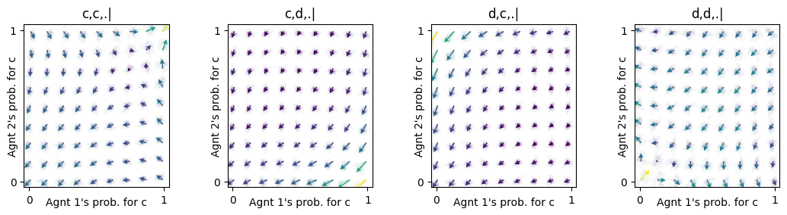
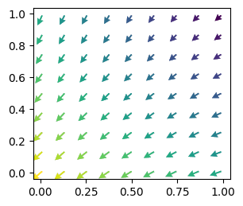
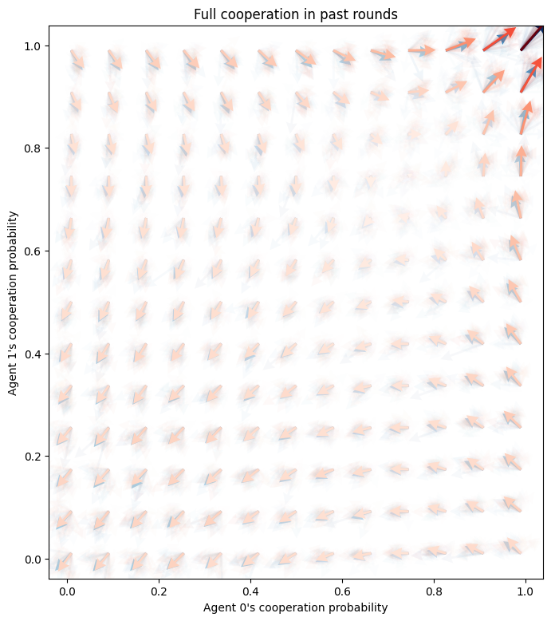
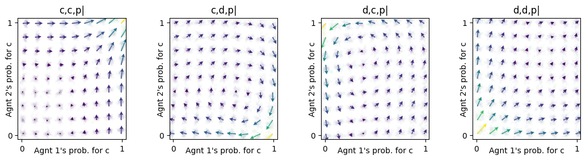

import numpy as np
import matplotlib.pyplot as plt
from pyCRLD.Environments.SocialDilemma import SocialDilemma
from pyCRLD.Environments.EcologicalPublicGood import EcologicalPublicGood
from pyCRLD.Agents.StrategyActorCritic import stratAC
from pyCRLD.Utils import FlowPlot as fp
np.random.seed(42)History Embedding
Embed an environment into a more complex representation of state/observation-action histories
Examples
from pyCRLD.Environments.HistoryEmbedding import HistoryEmbeddedsocdi = SocialDilemma(R=1.0, T=1.2, S=-0.5, P=0.0)
ecopg = EcologicalPublicGood(N=2, f=1.2, c=5, m=-5, qc=0.2, qr=0.1)Memory-one Prisoner’s Dilemma
With history embedding, we can wrap the standard normal form social dilemma envrionment into one, where the agents condition their action on the actions of the last rounds
memo1pd = HistoryEmbedded(socdi, h=(1,1,1))which has effectively a state set with the four elements
memo1pd.Sset['c,c,.|', 'c,d,.|', 'd,c,.|', 'd,d,.|']As you can see in the flow plots, this opens the possiblity for cooperation:
mae1 = stratAC(env=memo1pd, learning_rates=0.1, discount_factors=0.9)
x = ([0], [0,1,2,3], [0])
y = ([1], [0,1,2,3], [0])
ax = fp.plot_strategy_flow(mae1, x, y, flowarrow_points=np.linspace(0.01 ,0.99, 9), NrRandom=32,
conds=mae1.env.Sset)
In contrast to the case where agents do not react to the actions of the past round. Here, the only strategy the agents learn is defection:
np.random.seed(42)
mae0 = stratAC(env=socdi, learning_rates=0.1, discount_factors=0.9)
x = ([0], [0], [0])
y = ([1], [0], [0])
ax = fp.plot_strategy_flow(mae0, x, y, flowarrow_points=np.linspace(0.01 ,0.99, 9), NrRandom=32)
What is the effect of having longer action histories?
hlen = 2
memoXpd = HistoryEmbedded(socdi, h=(1, hlen, hlen))
print( len(memoXpd.Sset) )16maeX = stratAC(env=memoXpd, learning_rates=0.1, discount_factors=0.9)
fig, ax = plt.subplots(1,1, figsize=(8,9))
faps = np.linspace(0.01 ,0.99, 13)
x = ([0], [0], [0])
y = ([1], [0], [0])
fp.plot_strategy_flow(mae1, x, y, flowarrow_points=faps, NrRandom=32, cmap="Blues", axes=[ax])
fp.plot_strategy_flow(maeX, x, y, flowarrow_points=faps, NrRandom=32, cmap="Reds", axes=[ax]);
ax.set_xlabel("Agent 0's cooperation probability")
ax.set_ylabel("Agent 1's cooperation probability")
ax.set_title("Full cooperation in past rounds");
The longer action histories give additional force to mutual cooperation when the agents have cooperated in the past rounds and are close to cooperation. This suggests the hypothesis that longer action histories are beneficial for cooperation to be learned. However, more simulation would be needed to answer this question.
Memory-one Ecological Public Good
What is the effect of condition actions also on the past actions in the ecological public goods envrionment?
ecopg1 = HistoryEmbedded(ecopg, h=(1,1,1))
ecopg1.Sset['c,c,g|',
'c,c,p|',
'c,d,g|',
'c,d,p|',
'd,c,g|',
'd,c,p|',
'd,d,g|',
'd,d,p|']Visualizing the flow of learning in the prosperous state:
mae1 = stratAC(env=ecopg1, learning_rates=0.1, discount_factors=0.9)
x = ([0], [1,3,5,7], [0])
y = ([1], [1,3,5,7], [0])
ax = fp.plot_strategy_flow(mae1, x, y, flowarrow_points=np.linspace(0.01 ,0.99, 9), NrRandom=32,
conds=np.array(mae1.env.Sset)[[1,3,5,7]])
This flow has similarites to the flow of the memory-1 Prisoner’s Dilemma above, yet with more tendency toward cooperation. This is expected, since the ecological public good without memory-1 has also more tendency towards cooperation.
Implementation
Histories
A history specification determines which realizations of the past the agents will conditions their actions on.
A history specification h is an iterable of length 1+N. The first value indicates how many time steps of the state observation the agents will use to conditions their actions on. The remaining values indicate how many actions of each agent are used.
_get_all_histories
_get_all_histories (env, h, attr='Z')
| Type | Default | Details | |
|---|---|---|---|
| env | An environment | ||
| h | A history specification | ||
| attr | str | Z |
The default history specification is h=(1,0,0). Each agent observes information about the previous state, but none about the other agents.
_get_all_histories(socdi, h=(1,0,0))_get_all_histories(ecopg, h=(1,0,0))Each element of these lists is one history. The '.' indicates a dummy value for the non-observable actions. As you can see, here, the actions come before the state information - in contrast to the history specification h. You can think of time traveling from left to right in each history. First the agents choose their joint action, than they observe some state information, after which they choose another joint action. And so on, and so forth.
For example, the often used memory-one social dilemmas can be obtained by
_get_all_histories(socdi, h=(0,1,1))Here, the information about the environment is discarded, indicated by the '.'.
But the action-history lengths need not be identical,
_get_all_histories(socdi, h=(0,1,2))Here, each history contains six elements, since it spans two time steps, and each time step is represented by one element for each agent’s action plus one element for the environment.
Of course, histories can be obtained for any environment.
_get_all_histories(ecopg, h=(2,1,1))With _get_all_histories we simply iterate through all state and action indicies. However, we are not checking whether a history is actually possible given the transition probabilities of the envrionment.
_hist_contains_NotPossibleTrans
_hist_contains_NotPossibleTrans (env, hist:Iterable)
Checks whether the history contains transitions which are not possible with the environment’s transition probabilities.
| Type | Details | |
|---|---|---|
| env | An environment | |
| hist | Iterable | A history |
| Returns | bool | History impossible? |
For example, in the prosperous state 1 of the ecological public good, when both agents choose the cooperative action 0, there is no chance to leave the propserous state and enter the degraded state 0.
_hist_contains_NotPossibleTrans(ecopg, hist=('.', '.', 1, 0, 0, 0))Thus, any history that contains this transition is not needed.
Yet, if only one agent chooses the defective action 0, a transition to the degraded state becomes possible and corresponding histories cannot be discarded.
_hist_contains_NotPossibleTrans(ecopg, hist=('.', '.', 1, 1, 0, 0))_hist_contains_NotPossibleTrans(ecopg, hist=('.', '.', 1, 0, 1, 0))StateActHistsIx
StateActHistsIx (env, h)
*Returns all state-action histories (in indices) of env.
h specifies the type of history. h must be an iterable of length 1+N (where N = Nr. of Agents) The first element of h specifies the length of the state-history Subsequent elements specify the length of the respective action-history*
For example, the memory-one social dilemmas is obtained by
StateActHistsIx(socdi, h=(0,1,1))which is identical to
_get_all_histories(socdi, h=(0,1,1))since all histories are actually possible in the environment.
However, in our ecological public good example, this is not the case:
len(StateActHistsIx(ecopg, h=(2,1,1)))len(_get_all_histories(ecopg, h=(2,1,1)))Depending on the environment, filtering out impossible histories can lead to a significant performance boost.
hSset
hSset (env, h)
String representation of the histories.
| Details | |
|---|---|
| env | An environment |
| h | A history specificaiton |
For example,
hSset(socdi, h=(1,1,1))hSset(ecopg, h=(2,1,1))Transitions tensor
histSjA_TransitionTensor
histSjA_TransitionTensor (env, h)
*Returns Transition Tensor of env with state-action history specification h.
h must be an iterable of length 1+N (where N = Nr. of Agents) The first element of h specifies the length of the state-history Subsequent elements specify the length of the respective action-history*
For example,
histSjA_TransitionTensor(socdi, h=(0,1,1)).shapehistSjA_TransitionTensor(ecopg, h=(2,1,1)).shapeReward tensor
histSjA_RewardTensor
histSjA_RewardTensor (env, h)
*Returns Reward Tensor of env with state-action history specification h.
h must be an iterable of length 1+N (where N = Nr. of Agents) The first element of h specifies the length of the state-history Subsequent elements specify the length of the respective action-history*
For example,
histSjA_RewardTensor(socdi, h=(1,1,1)).shapehistSjA_RewardTensor(ecopg, h=(1,1,1)).shapePartial observation and environmental uncertainty
Note: These elements are useful for enviroments with state uncertainty or likewise, partial observability. Such are not yet available in this respository.
ObsActHistsIx
ObsActHistsIx (env, h)
*Returns all obs-action histories of env.
h specifies the type of history. h must be an iterable of length 1+N (where N = Nr. of Agents) The first element of h specifies the length of the obs-history Subsequent elements specify the length of the respective action-history
Note: Here only partial observability regarding the envrionmental state applies. Additional partial observability regarding action is treated seperatly.*
ObsActHistsIx(socdi, h=(1,1,1))hOset
hOset (env, h)
hOset(socdi, h=(1,1,1))histSjA_ObservationTensor
histSjA_ObservationTensor (env, h)
Returns Observation Tensor of env with state-action history h[iterable]
histSjA_ObservationTensor(socdi, h=(1,1,1))Environment wrapper
HistoryEmbedded
HistoryEmbedded (env, h)
*Abstract Environment wrapper to embed a given environment into a larger history space
h must be an iterable of length 1+N (where N=Nr. of Agents) The first element of history specifies the length of the state-history. Subsequent elements specify the length of the respective action-history*
| Details | |
|---|---|
| env | An environment |
| h | History specification |